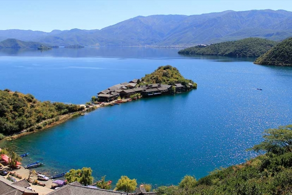
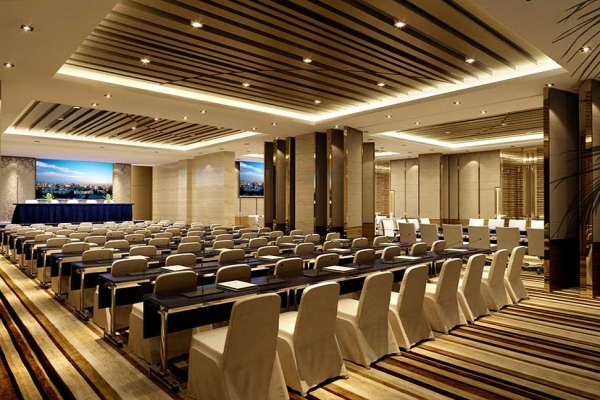

关于我们
ABOUT
长沙胤龙湖旅游度假区，位于长沙市洋湖经济总部，距长沙市区10公里，区位优越，交通便利。度假区规划面积2万亩，经营面积8000亩。2800亩湖面碧波荡漾、鸟飞鱼跃，园区内环境优美，生态和谐，是商务会议、拓展培训、休闲度假与观光旅游的理想场所。 自2002年开发以来，胤龙湖形成了休闲度假、蔬菜种植、水产孵化、生态山庄等配套体系，成为一座具有综合接待能力的大型度假区。目前，胤龙湖能同时容纳2000人就餐、600多人住宿，是湖南省休闲农业与乡村旅游行业中的龙头企业。
山庄简介
Mountain villa
Leisure vacation
休闲度假
这一刻放飞自我
千龙湖度假区拥有垂钓、水上娱乐、亲子游乐、球类、棋牌、KTV、夜间娱乐、嘉年华等各种现代娱乐休闲项目，品类多样，内容丰富，设施完善，随时为游客提供细致、热情、周到的服务，满足各类游客的不同休闲娱乐需求，让游客体验放飞青春的激情。千龙湖度假区拥有垂钓、水上娱乐、亲子游乐、球类、棋牌、KTV、夜间娱乐、嘉年华等各种现代娱乐休闲项目，品类多样，内容丰富，设施完善，随时为游客提供细致、热情、周到的服务，满足各类游客的不同休闲娱乐需求。
.jpg)
01

02
湖中岛
这一刻值得纪念
是以传统文化为主题，岛上各种特色帐篷，酒店外观简单大气，内饰高档，传统文化主题鲜明，特色突出；，湖、岛巧妙融合，浑然天成；岛上还设婚庆策划与婚纱摄影专区、商店、茶餐厅、朝拜屋、游艇以等一系列主题场所和设施。岛上项目：客房、中餐、煲仔饭、露营、篝火晚会、露天KTV、烧烤、垂钓、自助餐、婚纱摄影、包岛聚会、中式婚礼。
Business Conference Center
商务会议中心
这一刻应该铭记
会议中心设施完善、设备先进、功能齐全，会议室规模和类型多样，各种大小会议室共13、能满足各种会议需求。大型会议室可容纳300-1000人，其他为风格各异的中小型会议室。全面具备了承办大型会议的能力和条件

03

04
Beautiful fishing environment
优美的垂钓环境
这这一刻体验大自然
基地规划面积达230亩，作为华中地区大型的国际性垂钓基地，是集游乐、体验、互动、表演、竞技为一体的综合公园。园内共有专业的竞技池3个，休闲垂钓池12个，池内鱼类资源丰富。近年来，成功举办了一系列国家级钓鱼赛事
Ecological Agriculture base
生态农业基地
这一刻享受大自然的馈赠
农业基地总占地面积1050亩，总投资3800万元。示范园内地势平坦高差较小。示范园全年平均气温17.3°C，年降雨量1400mm左右，土地肥沃，阳光充足，雨量充沛，水源较好，排灌自如，无污染源，种菜历史悠久，是发展无公害蔬菜的区域。农业基地按照功能不同分成8大功能区，分别为：入口服务区、湿地水生蔬菜观赏区、现代农业展示观赏区、生态循环农业示范区、科普科教区、开心农园实践区、果蔬采摘区。

05